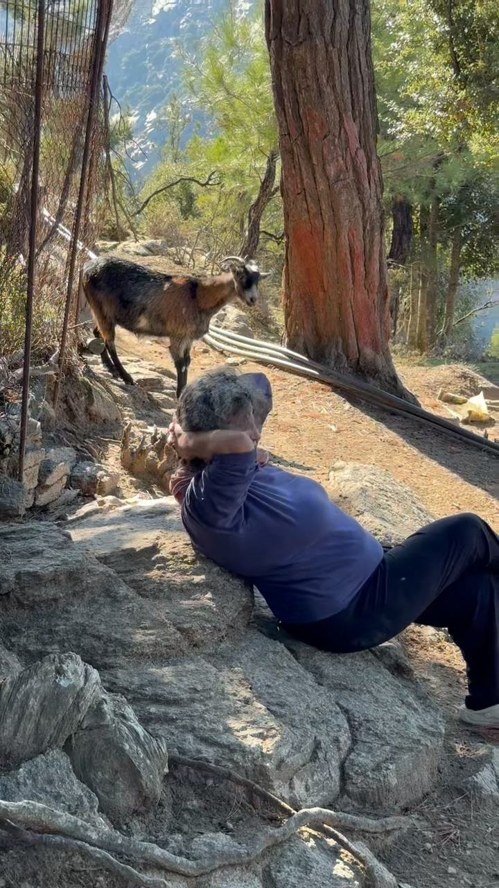
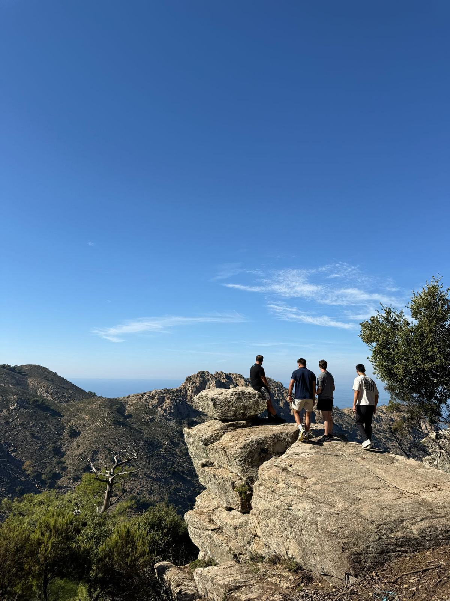
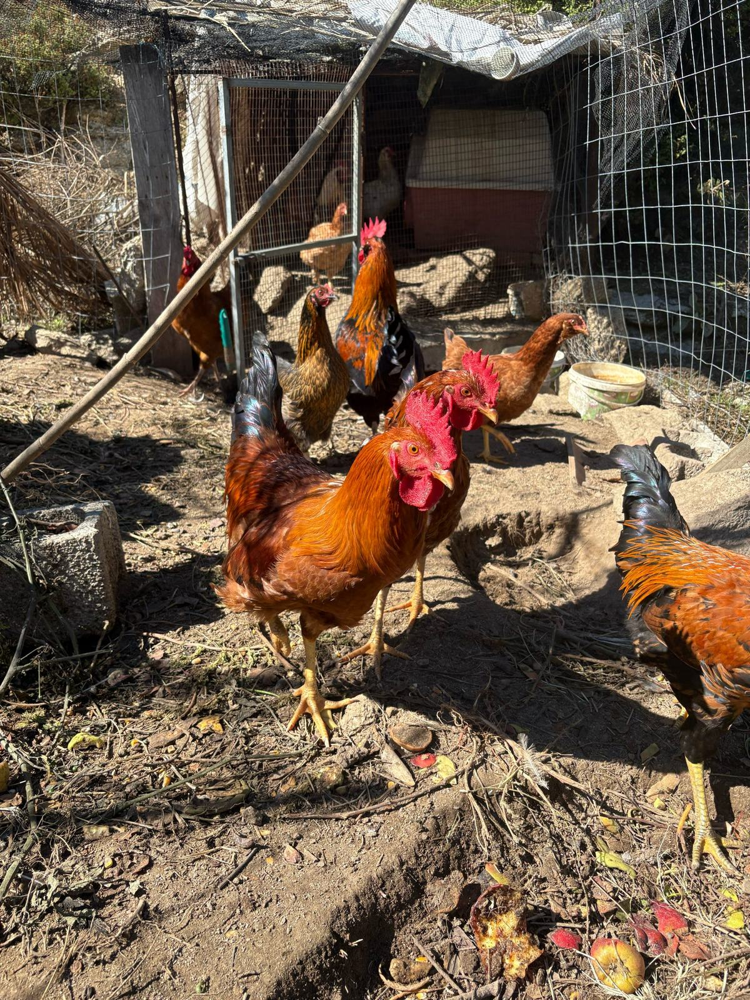
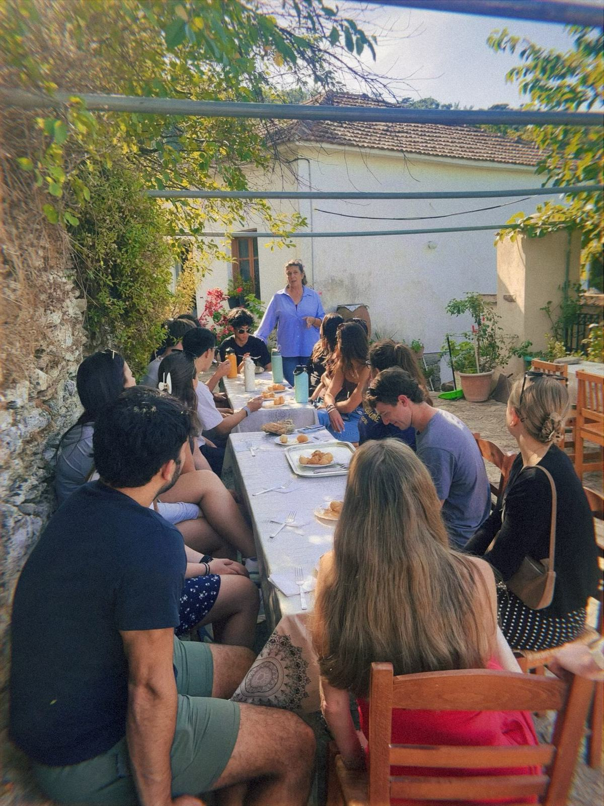
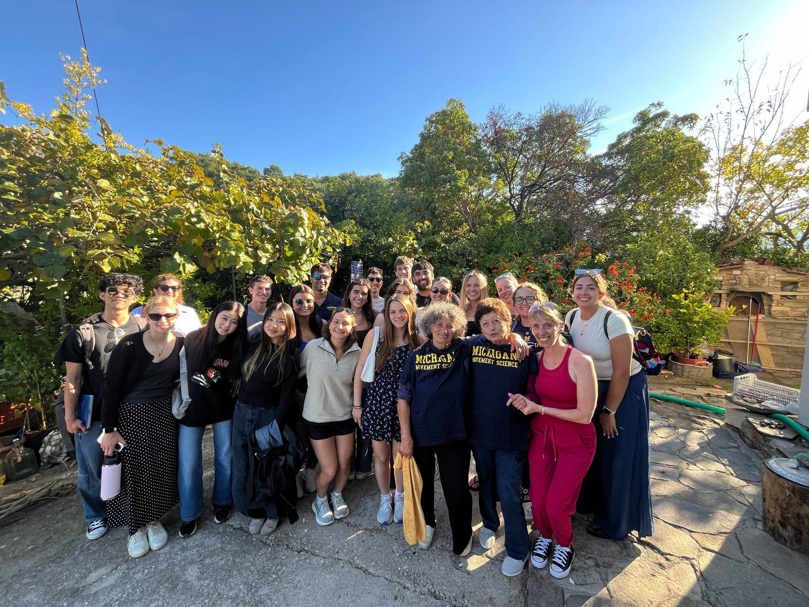
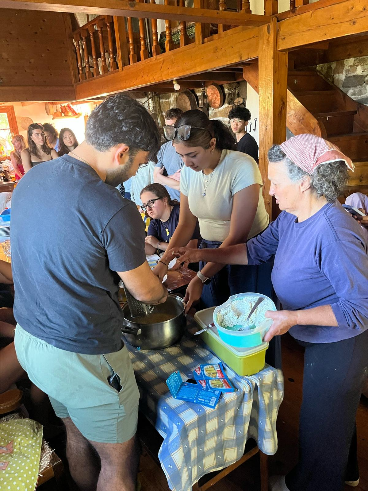
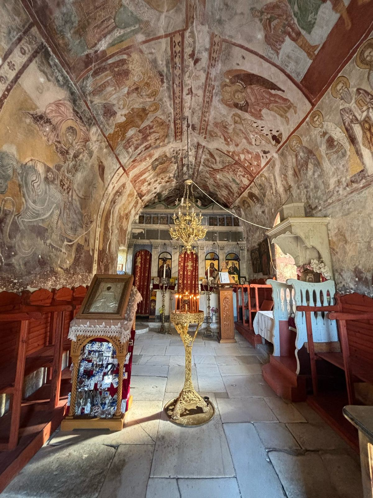
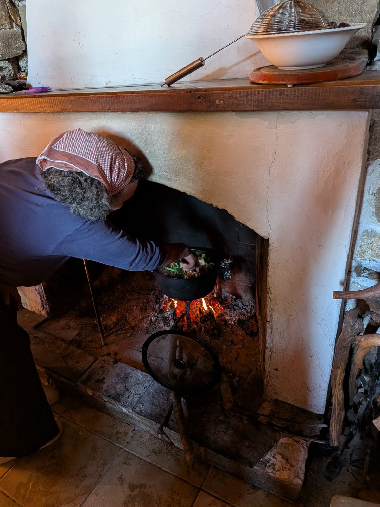
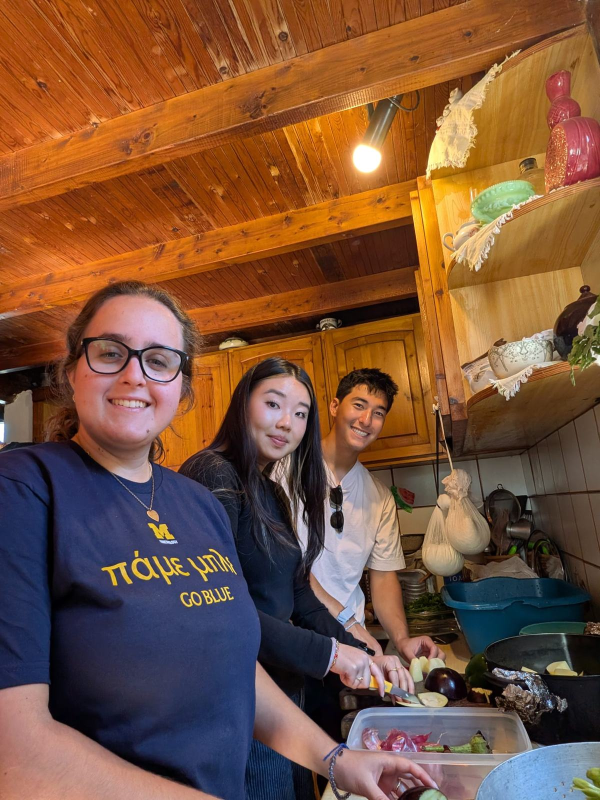
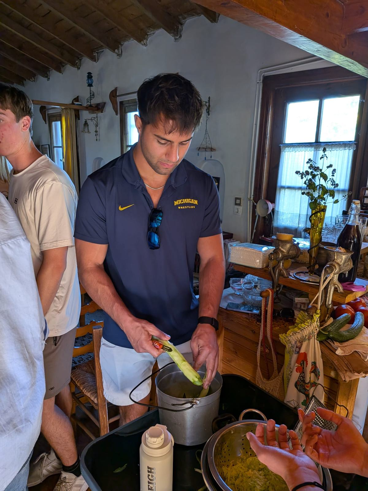

Independence Beyond Age
Healthy aging isn’t just about maintaining physical independence. It’s also about having opportunities to share our experiences, connect with others, and continue finding purpose in everyday life.
One of the most memorable parts of our time in Ikaria was visiting another older woman’s home. We originally expected to spend the afternoon cooking and sharing a traditional meal with her, similar to our previous home visit. However, we ended up doing much more than that, including an unexpected hike around her property.

We started the day helping her prepare lunch. Some of us shredded cucumbers and onions for tzatziki, while others chopped vegetables for a stew. We also helped prepare cheese pies by making dough and rolling it into small pieces around the filling, almost like pigs in a blanket. Once everything was prepared and left to cook, our host offered to show us around her land.
What I hadn’t expected was how much of a hike this would turn into. We made our way downhill through bushes and overgrown vegetation, following our host along paths that were barely distinguishable from the surrounding landscape. Unlike many of the hiking trails I’ve encountered in the United States, there were no clearly maintained walkways, and the terrain was steep and uneven. We collected chestnuts from her trees, visited her goats and fed them leaves and nuts, and tried an unfamiliar fruit that reminded me of a cross between a strawberry and a peach. On our way back, we cracked open walnuts from her walnut tree, and she also showed us her almond tree. The view from the edge of her property was incredible, almost like something I would expect to see in a state park rather than someone’s backyard.
What impressed me most was how easily our host navigated the terrain. The hike wasn’t particularly easy for us, yet she confidently led the way, breaking off branches as we walked and showing us around the land she knew so well. I was struck by how much independence and physical capability she maintained at her age. Activities that I would consider a challenging hike were simply part of navigating her own property.
Another moment that stayed with me was when she told us that having our group visit made her “feel young again.” After spending the afternoon cooking, exploring her land, and sharing a meal together, I could understand why the experience might have been meaningful to her. It reminded me that social connection is important not only because it provides companionship, but also because it gives people opportunities to share their knowledge, experiences, and interests with others.
This also reminded me of my experiences volunteering with older patients in the hospital. I’ve seen how much a conversation or shared activity can brighten someone’s day, particularly when they have limited opportunities for social interaction. Although our host’s circumstances were very different, her comment reinforced my appreciation for the emotional aspects of healthy aging.
Looking back, this visit brought together several themes I had been noticing throughout the trip: physical activity incorporated into everyday responsibilities, independence in older adulthood, and the importance of meaningful social interactions. It reminded me that healthy aging isn’t just about living longer or avoiding disease, but also about maintaining the ability and opportunity to participate in the things that make life fulfilling.
Healthy aging isn’t just about maintaining physical independence. It’s also about having opportunities to share our experiences, connect with others, and continue finding purpose in everyday life.
Photographs from the experiences and people behind this reflection.








